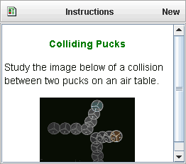
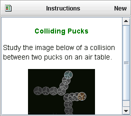
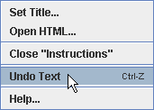

The page view displays text and html pages. Each page has a title. Multiple pages are organized into tabs.
Click the Page button to display its menu and select New to create a page. The new page and its title are immediately displayed. By default, the title is "untitled" and the text is a brief set of editing instructions.


To change the title, double-click the current title or right-click the page and choose Set Title... from the popup menu. A dialog box will be displayed with the current title selected in an input field. Type a new title into the field (background will turn yellow while typing) and hit the Enter key.


Double-click the page to edit the text. The current text will automatically be selected.

As you edit the text the background will turn yellow to indicate you have unsaved changes. When done making changes, enter the text by hitting shift-Enter (pressing the Enter key while holding down the shift key) or clicking anywhere outside the page. Note: the Enter key alone (without the shift key) does not enter your text but instead starts a new paragraph.
To display an HTML document, enter the path to the document as the page text. The path may point to a file on a local machine or a remote server.

 

For local files, you can also choose Open HTML... from the Page menu or popup menu, then select the html document with a standard Open File dialog.


For a file on a remote server, the path must include the url protocol ("http://") as shown below. An easy way to enter the correct path is to navigate to the file in a web browser, then copy the browser address and paste as the page text.

To undo or redo changes to the text, right-click the page or its title and choose the corresponding item from the popup menu, or use the keyboard shortcuts control-Z (undo) or control-Y (redo). Note: the undo menu item is available only after the text has changed, and the redo item only after undoing a change.

To close a page (for example, the "Instructions" page), right-click the page or its title and choose Close "Instructions" from the popup menu.
Locking a page prevents changes in its content or title. There are two ways to lock a page: